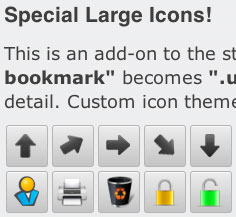
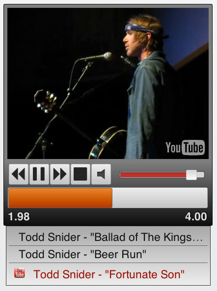

A jQuery Based User interface that makes adding a UI to any of your web applications as easy as possible. Which results in your users being able to use your application.
huement user interface [hui] uses the jquery library, in addition to parts of the jquery-ui library. hui provides a High Definition look and feel to all your projects. In addition it also allows for easy and familiar user interactions and application feedback in a variety of way.
Themes are a huge part of the library, and photoshop, gimp and corel draw version of the given PSD's are provided to get you started. Colors are acheived through CSS gradients and solid color fallbacks ensure backwards compatibility. Images are used sparingly, and when they are, they take advantage of the background-position: elemenet to ensure quick load times and minimal use of memory.
One of the key features with hui is its ability to quickly integrate all sorts of media. Buttons and clocks are fine and good, but most users would like a little more than text content these days. We allow you to do that in a variety of ways ensuring that your content gets to all you your users.
With help from a jPlayers music library, hui is able to delivery music and video over HTML5 with a flash fallback for older devices and browsers.
 &
&  &
&